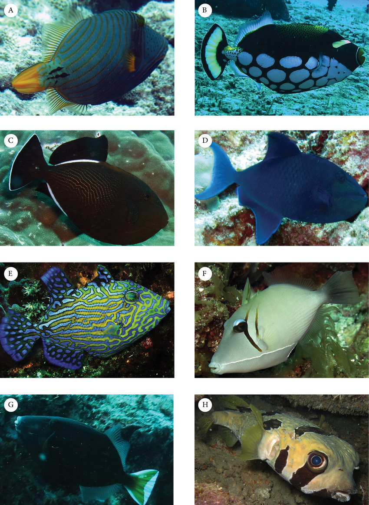

-
A brief description of the fisheries of the Andaman and Nicobar Islands is presented. This stretch of 585 islands,
islets and rocks in the northeast Indian Ocean has sovereign rights to a sea area of nearly 600,000 sq/km. Annual
landings have increased from 44 tons in 1950 to 3,850 tons in 1982. The main methods of capture are gill-nets,
hook and line and seine nets. Of 700 recorded species, 200 are classified as of economic importance. The main
pelagic resources are sardines, carangids, and mackerels followed by anchovies and scombrids. The main demersal
resources are percoids and silver bellies.
Game Fishing in Andaman Islands.
-
Fishing is one of the sports that combine the sense of adventure and surprise in one, and what’s a better place to fish
and angle than the deep and enticing seas of Andaman Islands.The virgin sea biodiversity of the islands are home to
fishes of various species that sometimes exceed more than 50 kgs in weight and upto 3.1 meters in length, which
fishing enthusiasts already know is hard to find anywhere else.Game Fishing in Andaman Islands The waters are
so abundant with sea creatures that you will never face a no-game situation and will have to stop only to catch
a breath, thanks to the Andaman Admins catch-release policy to keep the population thriving.
Places to Game/Sport Fish in Andaman:
-
Game Fishing trips are usually done for the whole day and will take you to some very unique places in the isles,
not visited by other tourists.
Game Fishing in Andaman Islands
There are 4 places from where you can easily book the complete fishing trip and enjoy long hours of fishing and calmness:
- Havelock Island
- Port Blair
- Cinque Island
- Rutland Island
Types of Fishes usually found near Andaman and Nicobar:
- Blue Marlin
- Black Marlin
- Sailfish
- Dorado
- Dogtooth Tuna
- Yellow Fin Tuna
- Various other Fish species
How it Works?
- You can select a boat from the three options available and get ready for the adventure.
- You will be given some instructions on how to operate the fishing rods, if you are new to the game.
- Fishing Rods, Baits and other necessary stuff will be provided by us.
- Next, we will take you on the boat to spots known for abundance of fishes including the
uninhabited islands of Cinque where you can indulge yourself in fishing.
- You will also get to explore islands and areas that are not opened for tourists and aren't
discovered by much people.
Find the best fishing charters in Andaman and Nicobar Islands.
-
Would you like to catch some fish in Andaman and Nicobar Islands? You can rent or charter a variety of boats for the best angling
excursion. Most fishing charters come with a captain or a fishing guide service that will take you to the best fishing spots
in Andaman and Nicobar Islands and make sure to make your trip is a success. From hourly to half-day and full-day trips to
overnight charters, you'll find a fishing trip that's right for you. Andaman and Nicobar Islands is a great place to go fishing.
We recommend you check with your guide to find out the kinds of amenities they may provide, for example:
- Tackle
- Bait
- Coolers
- Fishing rods
- Fishing permits
- A sunny day with your line in the water and good company makes for the perfect experience. Whether you're celebrating a birthday,
bachelor party, out with the guys or on a family vacation, fishing charters provide an unforgettable experience.
FISH SPECIES FOUND IN ANDAMAN
- Andaman is home to 280 edible fish specifies. As if that isn’t enough the area is also famous for dolphins and the rare green
Turtle. The mean weight of the fish recorded is about 20 to 45kg a figure that leaves game fishers eager to try their luck in
the water. for Game fishing in Andaman. Because of how secluded and populated the Sea is, not much luck is required. Spanish
mackerel, barracuda, bluefin, coroal trout, pilot trevally, sailfish and Wahoo are some of the fish that inhabit the water
of Andaman. There is no shortage of them either as you only need under 30 minutes from the island to be find perfect spot
for fishing. A compilation of the worlds’ best game fish by the website www.fishfishme.com, lists 10 fish that are favourite
amount enthusiasts. It is great to note that the Andaman Sea has 4 of the 10 listed. These are Yellow fin tuna, Marlin, Sail
fish and Wahoo. Not only is the destination a natural marvel but the quality of the fish is amazing.

FISHING PACKAGES IN ANDAMAN
-
There are several fishing packages for those who visit Andaman. One is happy to know, there are several packages that suit
different levels of experience. Game fishers whether novice or professional will excitedly note that extreme popping and jigging,
popping jigging and trolling, live baiting and bottom, light and micro fishing packages are all offered. These packages will
differ from operator to operator but you should be able to conduct most of them across the board. There are several operators
on the Island that offer different packages. Notable among them is Andaman Aquaholics. Giant Trevally is arguably the most
popular game fish in Andaman. A new type of tackle used as bait has made fishing for this species much easier and rewarding.
The fact that catching Giant Trevally or GT as the fishers call it with almost any method makes it a fish of choice for most
visitors. Braided line with 80lb capacity is standard while one may consider a 100lb line to ensure definite success.